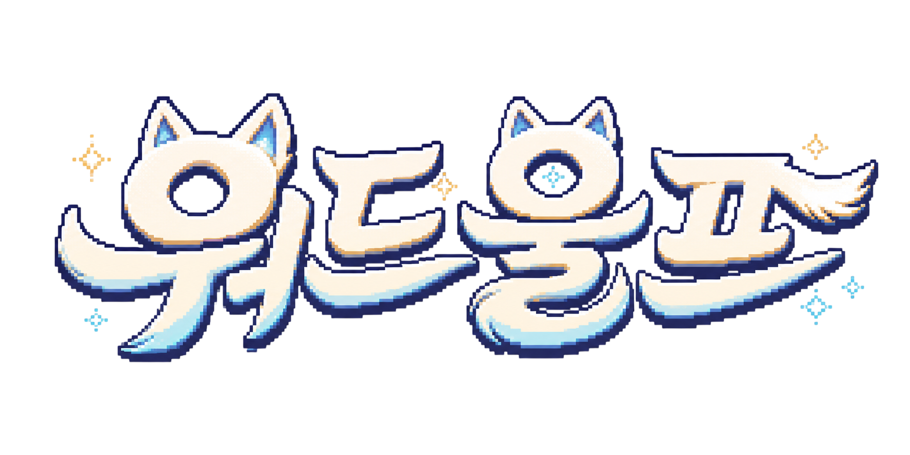

Frontend
- HTML, CSS, Vanilla JavaScript
- GitHub Pages 정적 배포
- V1/V2 별도 UI 유지
- localStorage로 닉네임, 아이콘, 방 세션 보관

Portfolio implementation note
GitHub Pages로 배포되는 정적 웹앱, Supabase Postgres/RPC 기반 실시간 게임 상태 관리, Supabase Edge Function과 OpenAI Responses API를 이용한 LLM AI 플레이어 구조를 정리한 문서입니다.
Overview
클라이언트는 게임 화면과 사용자 입력을 담당하고, 서버 권한 로직은 Supabase 쪽에 둡니다.
Tech Stack
백엔드 서버를 직접 운영하지 않는 서버리스 구조입니다.
ai-bot-turnGame State
단계 전환은 클라이언트 타이머가 아니라 Supabase RPC에서 현재 시간을 기준으로 결정합니다.
Data Model
방 하나의 진행 상태는 ww_rooms.current_game JSON에 모아 저장합니다.
| 테이블/파일 | 역할 | 주요 내용 |
|---|---|---|
ww_rooms |
방과 현재 라운드 상태 | 방 코드, 방장, 플레이어 목록, 설정, 현재 단계, 라운드, 단어 배정, 힌트, 투표, 결과를 저장합니다. |
ww_messages |
방 채팅 | 방 코드별 최근 채팅을 저장합니다. RPC는 권한 확인 후 최대 80개를 시간순으로 반환합니다. |
ww_word_pairs |
워드울프 단어 풀 | 시민 단어, 울프 단어, 큰 카테고리를 CSV에서 동기화합니다. |
ww_word_pair_history |
최근 단어 반복 방지 | 최근 20개 단어쌍을 제외하고 랜덤 추출하며, 히스토리는 500개까지만 유지합니다. |
supabase/word_pairs.csv |
단어 원본 | 코드와 분리된 데이터 소스입니다. GitHub Actions가 Supabase 테이블로 동기화합니다. |
LLM Players
AI는 실제 플레이어처럼 힌트, 채팅, 투표, 최종 추리를 RPC로 제출합니다.
ai-bot-turn이 OpenAI Responses API를 호출합니다.OPENAI_MODEL 환경변수로 교체 가능하며, 코드 기본값은 gpt-4.1입니다.temperature: 0.8로 생성 다양성을 줍니다.OPENAI_API_KEY는 Edge Function secret에만 저장되고 브라우저에는 노출되지 않습니다.AI 추가 시 고정된 이름 풀을 순서대로 사용합니다.
AI Sequence
AI도 DB 상태를 직접 조작하지 않고, 사람 플레이어와 같은 RPC 경로를 사용합니다.
방장 브라우저가 현재 단계와 활성 플레이어를 보고 AI 힌트, 투표, 최종 추리 차례인지 판단합니다.
db.functions.invoke("ai-bot-turn")으로 방 코드, 방장 ID, AI 플레이어 ID, 행동 종류를 전달합니다.
Edge Function은 방장이 호출했는지, 대상 플레이어가 실제 AI인지 확인하고 AI 자신의 관점으로 방 상태를 조회합니다.
AI의 단어, 역할, 카테고리, 기존 힌트, 최근 채팅을 합쳐 행동별 프롬프트를 만듭니다.
Responses API가 힌트 문장, 채팅 답변, 투표 대상, 시민 단어 추리를 생성합니다.
생성된 결과는 ww_submit_hint, ww_send_message, ww_vote, ww_submit_wolf_guess를 통해 저장됩니다.
Prompt Design
워드울프 게임 특성상 “너무 직접적인 힌트”와 “단어 유출”을 막는 로직이 중요합니다.
Mention Routing
여러 AI가 동시에 답하지 않도록 브라우저 쪽에서 호출 대상을 정합니다.
Security
포트폴리오에서 강조하기 좋은 부분은 “비밀 키가 브라우저로 가지 않는다”는 점입니다.
security definer RPC를 사용합니다. 특히 방 상태 조회 함수는 viewer ID를 기준으로
해당 플레이어의 단어만 내려주기 때문에, 시민과 울프의 비밀 단어가 브라우저에 한꺼번에 노출되지 않습니다.
Automation
데이터와 서버리스 함수를 GitHub Actions로 재현 가능하게 관리합니다.
| Workflow | 트리거 | 하는 일 | 필요 Secret |
|---|---|---|---|
Run Supabase Migrations |
수동 실행 또는 migrations 변경 push | PL/pgSQL 마이그레이션을 순서대로 실행하고 적용 이력을 저장합니다. | SUPABASE_DB_URL |
Sync Word DB |
수동 실행 또는 word_pairs.csv 변경 push | CSV를 읽어 ww_word_pairs 테이블에 동기화합니다. |
SUPABASE_URL, SUPABASE_SERVICE_ROLE_KEY |
Deploy Supabase Functions |
수동 실행 또는 functions 변경 push | ai-bot-turn Edge Function을 Supabase에 배포합니다. |
SUPABASE_ACCESS_TOKEN |
Portfolio Summary
OPENAI_MODEL 환경변수만 바꿔 쉽게 교체할 수 있습니다.